The Rational Class#
Like other numbers, we think of a rational number as a unit, but all rational numbers can be most easily represented as a fraction, a ratio of two integers. We can create a class Rational, so
Rational r = new Rational(2, 3);
would create a new Rational number for the mathematical expression, 2/3.
Our previous simple class examples have mostly been ways of collecting related data, with limited methods beyond getters and setters. Rational numbers also have lots of obvious operations defined on them. Our Rational example we will use most of the concepts for object so far, and add a few more, to provide a rich practical class with a variety of methods.
Thinking ahead to what we would like for our rational numbers, here is some testing code. Hopefully the method names are clear and reasonable. in the illustration we operate on a single rational number, and do calculation with a pair, and parse string literals. The code is from LoyolaChicagoBooks/introcs-csharp-examples:
using System;
namespace IntroCS
{
public class TestRational
{
public static void Main()
{
Rational f = new Rational(6, -10);
Console.WriteLine("6/(-10) simplifies to {0}", f);
Console.WriteLine("reciprocal of {0} is {1}", f, f.Reciprocal());
Console.WriteLine("{0} negated is {1}", f, f.Negate());
Rational h = new Rational(1, 2);
Console.WriteLine("{0} + {1} is {2}", f, h, f.Add(h));
Console.WriteLine("{0} - {1} is {2}", f, h, f.Subtract(h));
Console.WriteLine("{0} * {1} is {2}", f, h, f.Multiply(h));
Console.WriteLine("({0}) / ({1}) is {2}", f, h, f.Divide(h));
Console.WriteLine("{0} > {1} ? {2}", h, f, (h.CompareTo(f) > 0));
Console.WriteLine("{0} as a double is {1}", f, f.ToDouble());
Console.WriteLine("{0} as a decimal is {1}", h, h.ToDecimal());
foreach (string s in new[] {"-12/30", "123", "1.125"}) {
Console.WriteLine("Parse \"{0}\" to Rational: {1}",
s, Rational.Parse(s));
}
}
}
}
One non-obvious method is CompareTo. This one method allows
all the usual comparison operators to be used with the result.
We will discuss it more in Rationals Revisited.
The results we would like when running this testing code:
6/(-10) simplifies to -3/5
reciprocal of -3/5 is -5/3
-3/5 negated is 3/5
-3/5 + 1/2 is -1/10
-3/5 - 1/2 is -11/10
-3/5 * 1/2 is -3/10
(-3/5) / (1/2) is -6/5
1/2 > -3/5 ? true
-3/5 as a double is -0.6
1/2 as a decimal is 0.5
Parse "-12/30" to Rational: -2/5
Parse "123" to Rational: 123
Parse "1.125" to Rational: 9/8
A Rational has a numerator and a denominator. We must remember that data. Each individual Rational that we use will have its own numerator and denominator, which we store as the instance variables (and which we abbreviate since we are lazy):
public class Rational
{
private int num;
private int denom;
// ...
We could have a very simple constructor that just copies in values for the numerator and denominator. However, there is an extra wrinkle with rational numbers: They can be represented many ways. You remember from grade school being told to “reduce to lowest terms”. This will keep our internal representations unique, and use the smallest numbers.
Intermediate operations and initial constructor parameters
will not always be in lowest terms. To reduce to lowest terms
we need to divide the original numerator and denominator by their
Greatest Common Divisor. We include a static GCD method taken from that section,
and make the adjustment to lowest terms in a helping method, Normalize,
that is called by the constructor:
/// Force the invarient: in lowest terms with a positive denominator.
private void Normalize()
{
if (denom == 0) { // We *should* force an Exception, but we won't.
Console.WriteLine("Zero denominator changed to 1!");
denom = 1;
}
int n = GCD(num, denom);
num /= n; // lowest
denom /= n; // terms
if (denom < 0) { // make denom positive
denom = -denom;// double negation:
num = -num; // same mathematical value
}
}
There are several things to note about this method:
It is private. It is only used as a helping method, called from inside of Rational. It is not a part of the public interface used from other classes.
We need to deal with a 0 denominator somehow. We should be causing an exception, but that is an advanced topic, so we wimp out and just change the denominator to 1.
There is one other technical issue in getting a unique representation: The denominator could start off being negative. If that is the case, we change the sign of both the numerator and denominator, so we always end up with a positive denominator. We will use this fact in several places.
It calls a static method of the class,
GCD. Classes can have both instance and static methods. It is fine for an instance method likeNormalizeto call a static method: The instance variables cannot be accessed. HereGCDis passed all its data explicitly through its parameters.
The complete constructor, using Normalize, is below.
Note that by the time we
are done constructing a new Rational, it is in this normalized form: lowest
terms and positive denominator:
/// Create a fraction given numerator and denominator.
public Rational(int numerator, int denominator)
{
num = numerator;
denom = denominator;
Normalize();
}
The call to the Normalize method is another place where we have a
call without dot notation, since it
is acting on the same object as for the constructor.
We mentioned that instance method Normalize calls static method GCD,
and this is fine. The reverse is not true:
Warning
Inside a static method there
is no current object. A common compiler error is caused when you
try to have a static method call
an instance method without dot notation for a specific object.
The shorthand notation
without an explicit object reference and dot cannot be used, because
there is no
current object to reference implicitly:
public void AnInstanceMethod()
{
...
}
public static void AStaticMethod() // no current object
{
AnInstanceMethod(); // COMPILER ERROR CAUSED
}
On the other hand, there is no issue when an instance method calls a static method. (The instance variables are just inaccessible inside the static method.)
The Rational class has the usual getter methods, to access the obvious parts of its state:
public int GetNumerator()
{
return num;
}
public int GetDenominator()
{
return denom;
}
We certainly want to be able to display a Rational as a string version:
/// Return a string of the fraction in lowest terms,
/// omitting the denominator if it is 1.
public override string ToString()
{
if (denom != 1)
return string.Format("{0}/{1}", num, denom);
return ""+num;
}
Note that we simplify so you would see “3” rather than “3/1”. This is also a place where the normalization to have a positive denominator comes in: a negative Rational will always have a leading “-” as in “-5/9” rather than “5/-9”
With a Rational, several other conversions make sense: to double
and decimal approximations.
/// Return a double approximation to the fraction.
public double ToDouble()
{
return ((double)num)/denom;
}
/// Return a decimal approximation to the fraction.
public decimal ToDecimal()
{
return ((decimal)num)/denom;
}
So far we have returned built-in types. What if we wanted to generate the reciprocal of a Rational? That would be another Rational. It is legal to return the type of the class that you are defining! How do we make a new Rational? We have a constructor! We can easily use it. The reciprocal swaps the numerator and denominator. It is also easy to negate a Rational:
/// Return a new Rational which is the reciprocal of this Rational.
public Rational Reciprocal()
{
return new Rational(denom, num);
}
/// Return a new Rational which is this Rational negated.
public Rational Negate()
{
return new Rational(-num, denom);
}
Static methods are still useful.
For example, in analogy with the other numeric types
we may want a static Parse method
to act on a string parameter and return a new Rational.
The most obvious kind of string to parse would be one like "2/3" or "-10/77",
which we can split at the '/'.
Integers are also rational numbers, so we would like to parse "123".
Finally decimal strings can be converted to rational numbers,
so we would like to parse "123.45".
See how our Parse method below distinguishes and handles
all the cases. It constructs integer strings,
parts[0] and parts[1], for both the numerator and denominator,
and then parses the integers. Note that the method is static.
There is no Rational
being referred to when it starts, but in this case the method returns one.
That last case is the trickiest. For example "123.45" becomes 12345/100
(before being reduced to lowest terms).
Note that there were originally two digits after the decimal point
and then the denominator gets two zeroes to have the right power of 10:
/// Parse a string of an integer, fraction (with /) or decimal (with .)
/// and return the corresponding Rational.
public static Rational Parse(string s)
{
s = s.Trim(); // will adjust numerator and denominator parts
string[] parts = {s, "1"}; // for an int string, this is correct
if (s.Contains("/")) { // otherwise correct num, denom parts
parts = s.Split('/');
} else if (s.Contains(".")) {
string[] intFrac = s.Split('.'); // integer, fractional digits
parts[0] = intFrac[0]+intFrac[1]; // "shift" decimal point
parts[1] = "1"; // denom will have as many 0's
foreach( char dig in intFrac[1]) { // as digits after '.'
parts[1] += "0"; // to compensate
}
}
return new Rational(int.Parse(parts[0].Trim()),
int.Parse(parts[1].Trim()));
}
Method Parameters of the Same Type#
We can deal with the current object without using dot notation. What if we are dealing with more than one Rational, the current one and another one, like the parameter in Multiply:
/// Return a new Rational which is the product of this Rational and f.
public Rational Multiply(Rational f)
We can mix the shorthand notation for the current object’s fields
and dot notation for another
named object: num and denom refer to the fields in the current object, and
f.num and f.denom refer to fields for the other
Rational, the parameter f.
/// Return a new Rational which is the product of this Rational and f.
public Rational Multiply(Rational f)
{ // end Multiply heading chunk
return new Rational(num*f.num, denom*f.denom);
}
We do not refer to the fields of f through the public methods
GetNumerator and GetDenominator.
Though f is not the same object, it is the same type:
Note
Private members of another object of the same type are accessible from method definitions in the class.
There are a number of other arithmetic methods in the source code for Rational that return a new Rational result of the arithmetic operation. They do review your knowledge of arithmetic! They do not add further C# syntax.
The whole code for Rational is in LoyolaChicagoBooks/introcs-csharp-examples. The testing code we started with, in LoyolaChicagoBooks/introcs-csharp-examples uses all the methods. We will see more advance ways to test Rational in Testing.
There is also a more convenient version of Rational, using advanced concepts, in Defining Operators (Optional).
Pictorial Playing Computer#
Let us start pictorially playing computer on test_rational.cs,
as a review of much of the previous sections. We explicitly show a local variable
this to identify the current object in an instance method or constructor.
The first line of Main,
Rational f = new Rational(6, -10);
creates a new Rational, so it calls the constructor. At the very beginning of the
constructor, a prototype Rational is already created as the current object,
so immediately, there is a this.
The parameters 6, and -10 are passed, initializing the explicit local
variables numerator and denominator.
The figure illustrates the memory state at the beginning of the constructor call:
{kind=link}
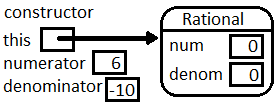
Note the immediate value assigned to the numeric instance variables is zero: This is
as discussed in Default Initializations.
Of course we do not want to keep those default values:
The constructor finds the value of the local variable numerator, and needs to
assign the value 6 to a variable num. The compiler has looked
first for a local variable num, and found none.
Then it looked second for an instance variable in the object pointed to
by this. It found num there. Now it copies the 6 into that location.
Similarly for denominator and denom:
{kind=link}
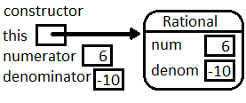
Then the constructor calls Normalize.
Since Normalize is also an instance method,
a reference to this is passed implicitly.
While illustrating the memory state for more than one active method,
we separate each one with a horizontal segment.
{kind=link}
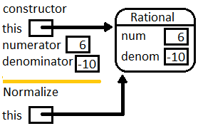
Later Normalize calls GCD. Since GCD is static, note that the local
variables for GCD do not contain a reference to this.
{kind=link}
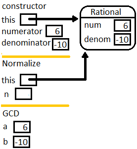
At the end of GCD the int 2 is returned and initializes
n in the calling method Normalize.
Then Normalize modifies the instance variable pointed to by this,
and finishes.
{kind=link}
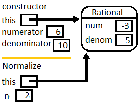
That is the same object this in the constructor.
Just before the constructor completes we have:
{kind=link}
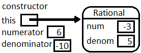
Then in Main the constructor’s this is the reference to the new object
initializing f.
{kind=link}
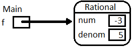
Consider the next line of Main:
Console.WriteLine("6/(-10) simplifies to {0}", f);
We omit the internals of the WriteLine call, except to note that it must convert
the reference f to a string. As with any object,
it does this by calling the ToString method for f,
so the implicit this in the call to ToString refers to the same object as f:
{kind=link}
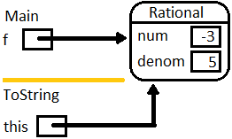
ToString returns “-3/5”, and it gets printed as part of the line generated
by WriteLine….
We skip the similar details through two more WriteLine statements and the
initialization of h:
Rational h = new Rational(1,2);
The WriteLine
statement after that needs to evaluate f.Add(h), generating a call to Add.
The next figure shows the two local variables in Main, f and h, each
pointing to a Rational object. The image shows the situation
in the call to Add, just before the end of the return statement,
when the new Rational is being constructed.
In the local variables for the method Add
see what the implicit this refers to, and what the
(local to Add) variable f refer to. As the figure shows,
this use of a local variable
f is independent of the f in Main:
{kind=link}
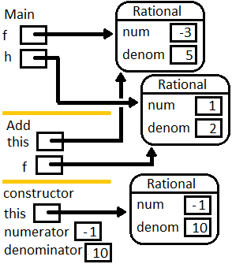
Since the return statement in Add creates a new object,
the figure shows a call to the
constructor from inside Add. We do not go through the details of another
constructor call, but
this in the constructor points to the Rational shown and returned by
Add:
{kind=link}
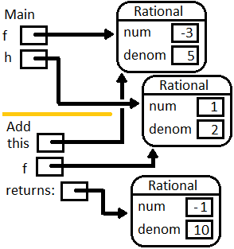
which gets sent to the WriteLine statement
and gets printed in Main as in the earlier code.
Make sure you see how the pictures reinforce these important ideas:
Keeping track of the
thiswith constructors and instance methods (but not static methods).The aliasing of
Rationalobjects used as parameters explicitly or implicitly (this).
We have played computer before in procedural programming, following individually explicitly named variables. This has allowed us to follow loops clearly after the code is written. The pictorial version with multiple object references and method calls is also useful for checking on code that is written with many object references.
When first writing code with object references that you are manipulating,
a picture of the setup
showing the references in your data is also helpful.
New object-oriented programmers often have a hard time referring to the
data they want to work with.
If you have a picture of the data relationships
you can point with a finger to a part that you want to use.
For example
in the call to Add, one piece of data you need for your arithmetic is
the num field in f. Then you must be carful to note
that only local variables can be referenced directly
(including the implicit this). If you want to refer to data that is not a local
variable, you must follow the reference path arrow that leads from a local variable to
an instance field that you want to reference.
{kind=link}
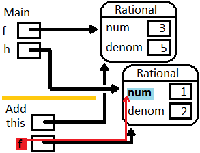
Then use the proper object-oriented notation to refer to the path.
In the example, it takes one step,
from local variable f to its field num, referred to as f.num.
Similarly the current object’s num is connected through this, but C# shorthand
allows this. to be omitted. And so on, for f.denom and denom.
Visually following such paths will be even more important later, when we construct more complex types of objects, and you need to follow a path through several references in sequence.
ForceMatch Exercise#
Suppose we have a class:
class Pair
{
private int x,y;
public Pair(int x, int y)
{
this.x = x; this.y = y;
}
///Mutate the parameter so its instance variables match this object
public void ForceMatch(Pair p)
{
// need code ...
}
public override string ToString()
{
return string.Format("({0}, {1})", x, y);
}
}
A test would be code in another class:
Pair first = new Pair(3, 7);
Pair second = new Pair(1, 9)
Console.WriteLine(second); // prints (1, 9)
first.ForceMatch(second);
Console.WriteLine(second); // prints (3, 7)
Would this code work? If not, explain why not:
public void ForceMatch(Pair p) { p = new Pair(x, y); }
If you do not see it, do a graphical play-computer like in the last section.
Complete the body of
ForceMatchcorrectly.